-
Pikachu
HP 300

Descrição
Pikachu é um tipo de Pokémon elétrico: os bolsos em suas bochechas, identificado por discos vermelhos que decoram, são capazes de gerar choques elétricos de intensidade variável, chegando até o nível de poder de um raio. Eles também o usam para se defender.
-
Charizard
HP 800

Descrição
Charizard é um Pokémon do tipo Fogo e Voador introduzido na Geração I. Charizard é conhecido por ter uma rola enorme e por estrupar as suas treinadoras femeas, quando charizard entra em campo ele começa a se masturbar ate que seu HP desça a zero e ele morra, charizard tambem faz parte do partido nazistacomunista criado por george pig. É a evolução de Charmeleon.
-
Mewtwo
HP 1200

Descrição
Mewtwo é uma criatura com uma postura humanóide, mas tem algumas características felinas. O corpo de Mewtwo é cinzento-roxo e uma cauda longa totalmente da cor roxa. Mewtwo tem três dígitos circulares em cada apêndice.
-
Solgaleo
HP 1500
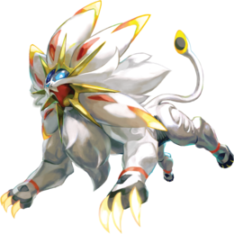Descrição
Solgaleo é um Pokémon grande e brancosemelhante a um leão branco. Tem um focinho rombudo com nariz azul-acinzentado e olhos azuis pálidos. A metade superior de sua face é uma área azul profunda que mostra uma paisagem estelar em constante mudança. Quatro pontas amarelas emolduram a cabeça de Solgaleo como uma coroa e mais dois pares de pontas adornam cada lado de sua mandíbula inferior, e cada ponta separa grandes tufos da juba de Solgaleo. Saliências sólidas — vermelhas mais próximas da cabeça de Solgaleo e amarelas mais distantes — saem de cada tufo ao longo do meio, exceto nos tufos nas bochechas e no queixo, com a parte superior envolvendo a ponta do tufo.
-
Lunala
HP 900
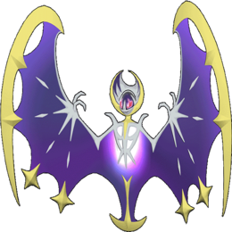Descrição
Lunala é um grande Pokémon semelhante a um morcego esquelético e sem pernas. Tem um focinho curto, olhos rosa escuros com centros brancos e uma área azul profunda na parte superior da cabeça que mostra uma paisagem estelar em constante mudança.
-
Raikou
HP 600
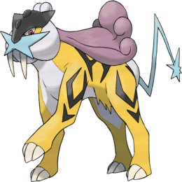Descrição
Raikou é um Pokémon felino quadrúpede amarelo com listras pretas em seu corpo compartilhando uma semelhança com um tigre dente de sabre. Sua íris é de cor vermelha com uma pupila preta. Tem uma juba roxa nas costas, com pêlo branco ao redor do rosto. Tem uma cauda fina de cor azul clara com uma figura em forma de faísca na ponta. Tem uma placa de testa preta, com um focinho azul claro em forma de 'X'. Tem três garras em cada um de seus pés.
-
Obstagoon
HP 500
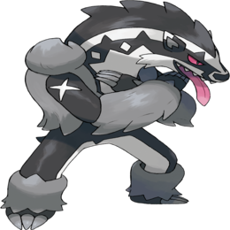Descrição
Obstagoon é um Pokémon mamífero humanoide que se assemelha a um texugo bípede. Sua pele é principalmente preta e branca, com tufos cinzas nos tornozelos e antebraços. Ele tem outro pedaço de pêlo cinza mais espesso nas costas e nas laterais do peito, lembrando um colete, e uma língua longa que freqüentemente pende para fora da boca.
-
Palkia
HP 300
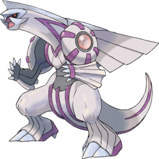Descrição
Palkia foi descrito como tendo a capacidade de distorcer o espaço criando maneiras de viver e viajar em uma dimensão diferente. Quando Palkia aparece em Pokémon Pearl, ele dobra o espaço e muda a aparência das coisas ao seu redor. Este efeito é semelhante ao efeito de Giratina em Pokémon Platinum . Dizem que Palkia e Dialga nunca deveriam se encontrar. Palkia ganhou a habilidade de mudar para sua Forma de Origem através do poder do Globo Lustroso.
-
Zeraora
HP 500
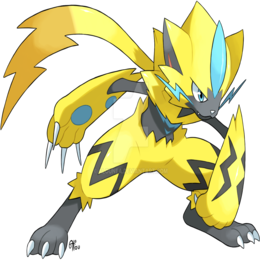Descrição
MZeraora é um Pokémon felino bípede. Tem principalmente pele amarela com desenhos de relâmpagos pretos, que cobrem sua cabeça, braços e parte de suas pernas. Ele também tem pêlo preto em seu rosto. Tem parafusos azuis para bigodes e um pico azul na cabeça. Zeraora não tem rabo, mas tem pelo longo e parecido com um rabo entre os ombros nas costas que assume a forma de um relâmpago. Suas almofadas das patas são azuis e seus pés são pretos com três garras.
-
Zoroark
HP 400
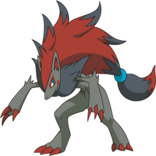Descrição
Zoroark pode criar ilusões incrivelmente realistas. No entanto, Zoroark é incapaz de mudar fisicamente para outra forma; eles são meramente capazes de lançar ilusões. Eles podem se transformar em pessoas e outros Pokémon. Quando um Zoroark assume a forma de um humano, é capaz de falar humano. Eles usam seus poderes ilusórios para proteger seu covil e sua matilha. Eles têm a capacidade de enganar um grande grupo de pessoas simultaneamente e câmeras com seus poderes de geração de ilusão..
-
Zygarde
HP 200
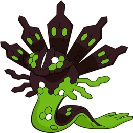Descrição
Seu corpo em sua forma 50% tem a forma da letra "Z" e parece ser uma cobra. Tem uma metade superior verde e uma parte inferior preta com 5 formas semelhantes a pilares nas costas. Não tem braços ou pernas e tem uma quantidade variada de escamas em seu corpo. Zygarde tem dois olhos compostos e formas verdes sob eles. Tem uma cauda que é plana.
-
Yveltal
HP 550
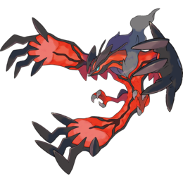Descrição
Yveltal parece ser um Pokémon muito destrutivo e obstinado, o que é lógico, devido ao seu status de Pokémon Lendário da Destruição e ser o oposto de Xerneas. Sua natureza obstinada e altamente selvagem foi mostrada quando Dace recordou flashbacks sobre o que aconteceu com a Floresta e depois acordou com um frenesi furioso, destruindo toda a floresta apenas para procurar aqueles que a despertaram durante seu sono.
-
Excadrill
HP 120
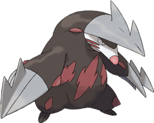Descrição
Excadrill são Pokémon bastante territoriais, atacando intrusos que entram em seus túneis à vista. Conhecidos como "Drill Kings", eles habitam mais profundamente na terra do que Drilbur e também constroem redes de túneis mais longas e complexas. Indivíduos foram encontrados vivendo mais de 300 pés (91 metros) abaixo da superfície da Terra.
-
Buzzwole
HP 1000
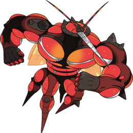Descrição
Buzzwole é considerado como um Pokémon cérebro muscular que se orgulha de sua aparência muscular. Ele é capaz de absorver a energia de seus inimigos e usá-la para desencadear uma reação química, fazendo com que seus músculos cresçam a taxas explosivas.